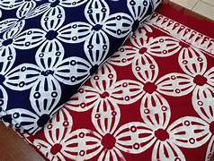
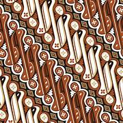

Batik Kawung (Jawa Tengah)

Batik Kawung memiliki motif lingkaran menyerupai buah kawung atau kolang-kaling, melambangkan keadilan dan kesucian.
Sejarah: Motif kawung adalah salah satu motif tertua di Jawa, biasa dipakai oleh bangsawan dan simbol keseimbangan dalam hidup.
Batik Parang (Jawa Tengah)

Batik Parang memiliki motif diagonal bergelombang, simbol keberanian, semangat, dan kekuatan.
Sejarah: Motif Parang muncul pada masa Kerajaan Mataram, digunakan oleh raja dan bangsawan sebagai simbol keteguhan dan kekuatan.
Batik Mega Mendung (Cirebon)

Batik Mega Mendung menampilkan motif awan bergelombang, melambangkan kesabaran dan kehidupan yang tenang.
Sejarah: Motif Mega Mendung dipengaruhi budaya Tionghoa, banyak ditemukan di Cirebon dan dikenal sebagai simbol kesejukan dan kedamaian.
Batik Sidomukti (Solo)

Batik Sidomukti menampilkan motif bunga dan daun simetris, melambangkan kemakmuran dan keharmonisan.
Sejarah: Batik Sidomukti merupakan motif khas Solo yang digunakan dalam upacara adat, melambangkan keberuntungan dan kesejahteraan.